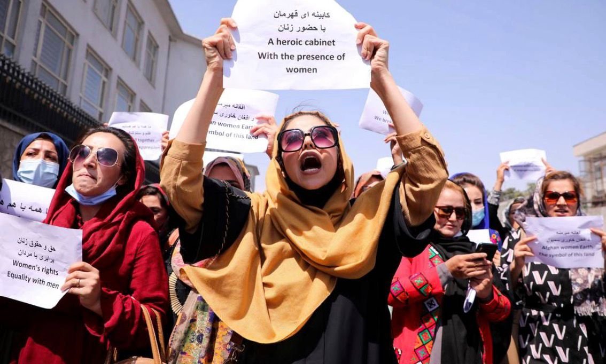

Solidariedade global
Mulheres no Afeganistão: o que elas passam
No Afeganistão, ser mulher hoje é viver sem direitos básicos. Desde que o Talibã voltou ao poder em 2021, as mulheres perderam quase tudo que tinham conquistado.
O que acontece com elas
Proibidas de estudar e trabalhar
Meninas são proibidas de ir para a escola depois dos 12 anos. Mulheres não podem fazer faculdade nem trabalhar na maioria das profissões. Elas foram apagadas da vida pública.
Proibidas de sair sozinhas
Uma mulher não pode sair de casa sem um homem da família acompanhando. Não pode ir ao parque, à academia ou ao salão de beleza, que foram todos fechados.
Roupas obrigatórias
Elas são obrigadas a usar burca, cobrindo todo o corpo e o rosto. Se não usarem, sofrem punições violentas.
Voz silenciada
Por lei, a voz de uma mulher é considerada "íntima" e não pode ser ouvida em público. Elas são proibidas de cantar, falar alto ou até de olhar pela janela.

Isso não é cultura. Isso é opressão. Isso é violência.
No Afeganistão, ser mulher virou um crime. Elas foram proibidas de estudar, de trabalhar, de sair de casa sozinhas e até de falar em voz alta em público. Sonhos foram trancados, escolas foram fechadas e vozes foram caladas à força.
Justiça e liberdade
Lugar de mulher é onde ela quiser.
Justiça é o direito de uma menina de 12 anos voltar para a escola. Justiça é o direito de uma mulher ser médica, professora, ser o que ela quiser ser. Justiça é o direito de ir e vir, de falar, de existir sem precisar de permissão.
Como posso ajudar?
O abaixo-assinado pelas mulheres do Afeganistão é importante porque é uma das poucas ferramentas que ainda chegam até elas. Desde 2021, elas perderam o direito de estudar além do ensino primário, de trabalhar na maioria das profissões, de circular sem um acompanhante masculino e de frequentar parques, academias e salões. É o que a ONU chama de apartheid de gênero.
Ele não resolve sozinho, mas sem pressão internacional a situação se torna normalizada e invisível.
Que a nossa voz aqui no Brasil chegue até lá como um abraço de solidariedade. Que nenhuma mulher se sinta sozinha, nem aqui, nem no Afeganistão.